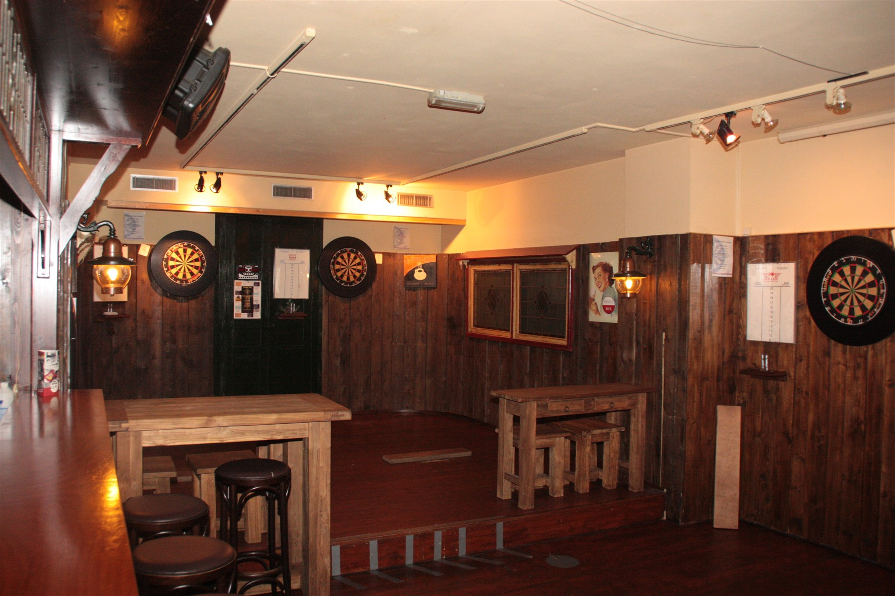
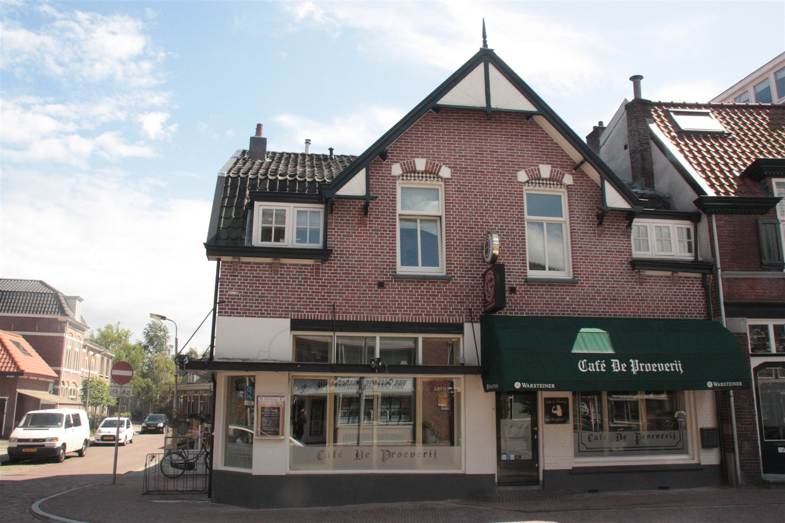
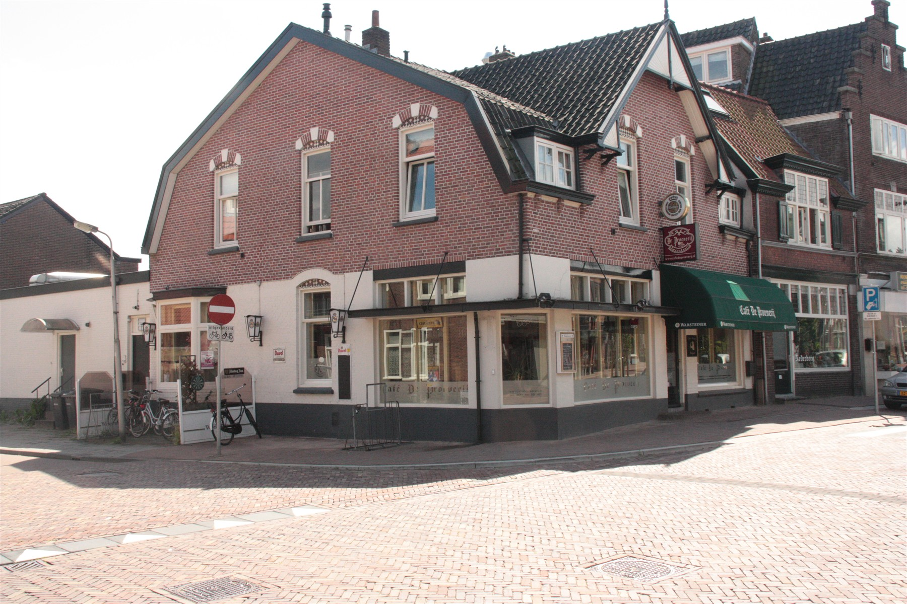

Café in Amersfoort, Utrechtseweg
Café De Proeverij
Ouderwetse gezelligheid en een ongedwongen sfeer. Bier, whisky en zes dartbanen.
Welkom bij Café De Proeverij
Café De Proeverij staat voor ouderwetse gezelligheid en een ongedwongen sfeer.
Aan de bar of aan een van onze stamtafels kunt u genieten van een uitgebreid assortiment bieren, whisky's en andere dranken. Tevens behoort een bittergarnituur, balletje gehakt of een andere snelle hap natuurlijk ook tot de mogelijkheid.


Darten bij De Proeverij
Bij Café De Proeverij zijn er zes officiële wedstrijdbanen waarop gedart kan worden.
- Baan 1
- Baan 2
- Baan 3
- Baan 4
- Baan 5
- Baan 6
Door de week wordt er vaak in competitieverband voor de DBMN gedart. Vaak zijn er ook toernooien in het weekend.
Daarnaast is er elk jaar in de zomermaanden de Zomercompetitie, gevolgd door de finaleavond.

Vrijdagmiddag is borrelen
Vrijdagmiddag staat bij Café De Proeverij in het teken van bedrijfsborrelen. De werkweek verdwijnt naar de achtergrond en u geniet van goede muziek, gezellige gasten en een lekker drankje.
Ons publiek is van alle leeftijden en u bent altijd welkom om een feestje te komen vieren met collega's, vrienden of relaties.
Een feest of bijeenkomst?
Voor grotere gezelschappen bestaat de mogelijkheid om gebruik te maken van onze ruimte met eigen bar en dansvloer. Café De Proeverij is een veelzijdige locatie voor een verjaardag, bijeenkomst, borrel of bedrijfsfeest.
Voor meer informatie en reserveringen kunt u gerust even binnenkomen, of bellen.
Bel 033 - 463 01 09 Mail onsOpeningstijden
| Maandag | Gesloten |
|---|---|
| Dinsdag | 16.00 - 01.00 uur |
| Woensdag | 16.00 - 01.00 uur |
| Donderdag | 16.00 - 01.00 uur |
| Vrijdag | 16.00 - 01.00 uur |
| Zaterdag | 16.00 - 01.00 uur |

Kom langs
Bereik ons
033 - 463 01 09
Bij geen gehoor: 06 15 02 72 22
info@cafedeproeverij.nl